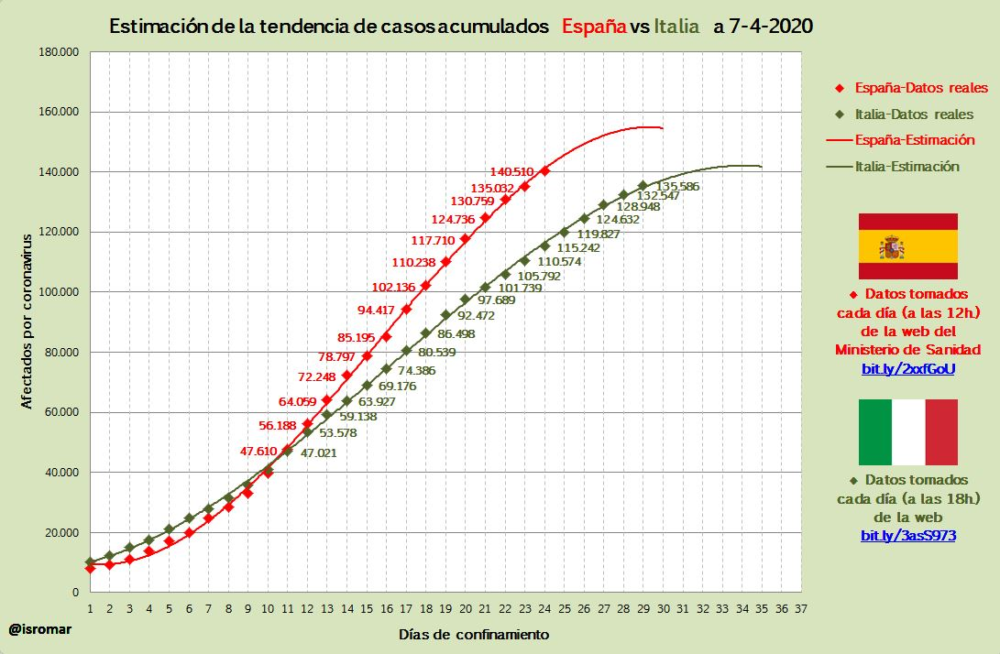

Estimación de contagios por covid durante el confinamiento
Mi pasión por los números me llevó a crear modelos predictivos que estimasen la evolución de los contagios.
Basándome en datos oficiales, tanto de España como de Italia, hacía las predicciones un día antes y
luego comparaba mi predicción con los datos oficiales publicados al día siguiente.
La gráfica muestra con rombos los datos oficiales que se iban publicando cada día de confinamiento y la línea muestra mi ajuste de la curva a dichos datos para poder predecir los casos futuros.
La tabla muestra la predicción que hice al ajustar dicha curva, de modo que cada día pronosticaba los contagios que habría el día siguiente, el error muestra la desviación de mi predicción con respecto a los datos reales publicados.
Casos acumulados de coronavirus 2020-04-09
| País |
Casos pronosticados |
Casos publicados |
Error |
| España |
149.937 |
157.022 |
4.41% |
| Italia |
143.092 |
147.577 |
3.03% |
Casos acumulados de coronavirus 2020-04-07

| País |
Casos pronosticados |
Casos publicados |
Error |
| España |
141.655 |
140.510 |
0.81% |
| Italia |
137.553 |
135.586 |
1.45% |